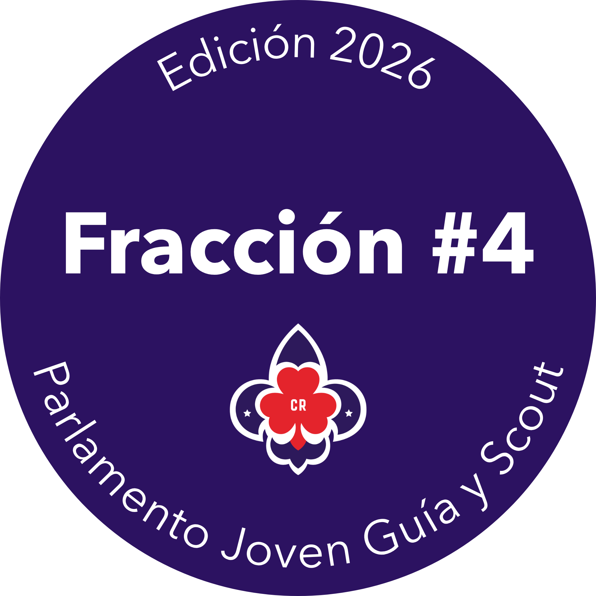

No se encontraron propuestas con ese título.
Fracción legislativa · Consulta ciudadana
Consulta y análisis de las iniciativas presentadas por la fracción legislativa #4.
Explora, lee y compara las propuestas presentadas por los integrantes de la Fracción Legislativa. Este espacio reúne toda la documentación necesaria para facilitar el análisis y la selección de la iniciativa que representará a la fracción.
Tras la votación de la fracción legislativa, cuya encuesta fue cerrada a las 11:55 a. m. del domingo 26 de julio de 2026, la Propuesta 06 — Ley para la promoción de la Accesibilidad Comunicativa en Espacios y Servicios Públicos de Costa Rica, presentada por Josimar Madrigal Espinoza (Limón #144) — resultó electa para representar a la fracción legislativa.
Ver propuesta electa11 propuestas
No se encontraron propuestas con ese título.
